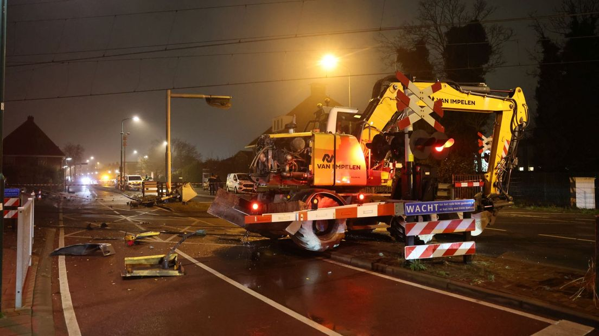
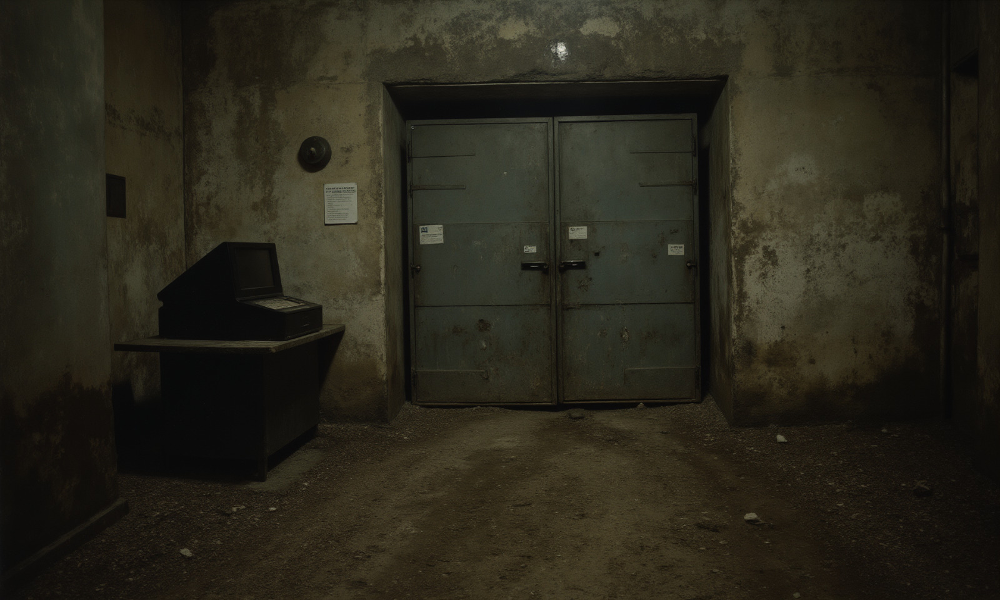
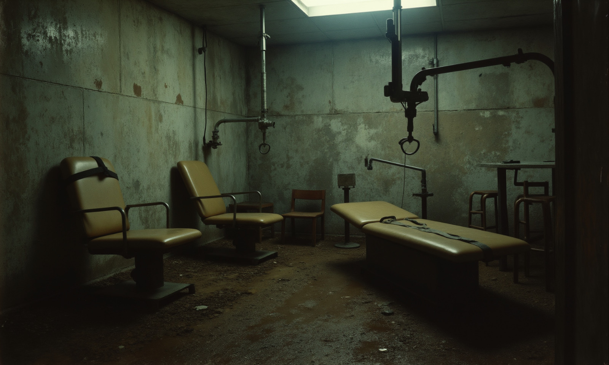
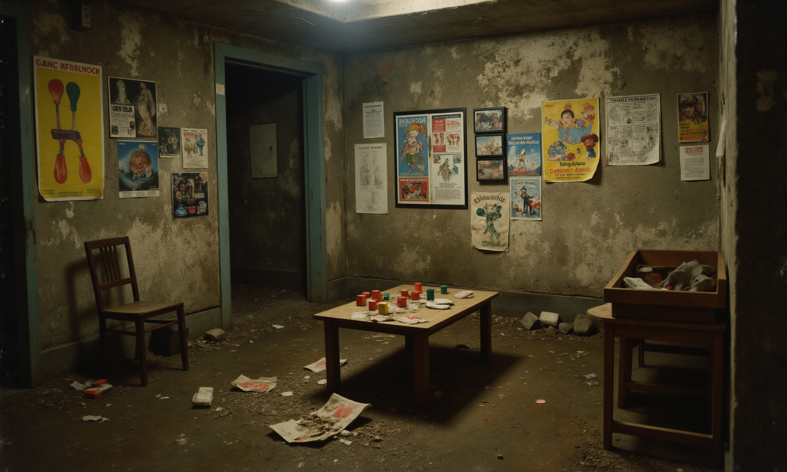

Bewusteloze vrouw aangetroffen in mysterieuze bunker Bornia

Driebergen-Rijsenburg - Zondagavond 19 januari januari is er een vrouw bewusteloos
gevonden in Zeist. De vrouw, Linda P., is eerder al een tijd vermist geweest en was
bevriend met de in 1983 omgekomen Patricia Hart. De politie heeft een groot onderzoek
uitgezet.
De vrouw (58) werd gevonden in een geheim militair trainingskamp in Bornia, Zeist. Hoe
zij daar terecht is gekomen is onbekend. De politie ontving een anonieme tip over een
roerloze vrouw en doet een oproep aan de tipgever om zich zo spoedig mogelijk te melden.
De politie is een onderzoek gestart in het trainingskamp. "We wisten helemaal niet van
de aanwezigheid van dit complex. Gelukkig is er nog één gepensioneerde collega die
betrokken was bij dit dossier. Die heeft ons veel informatie kunnen geven.", aldus
wijkagent Pim Oliviers.

Het kamp blijkt een onderzoeks- en trainingskamp van het Russische leger. Begin jaren 90
sloot het kamp definitief de deuren na een reeks beveiligingsincidenten. Over wat er
destijds gebeurd is, wil Oliviers niks kwijt. "Op dit moment is er nog veel onduidelijk.
Onze woordvoerder zal binnenkort een statement naar buiten brengen. Ik heb al te veel
gezegd."

